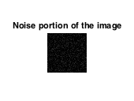
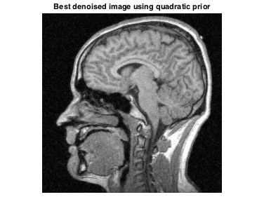
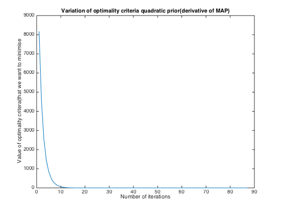
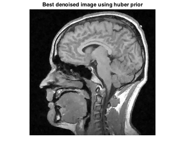
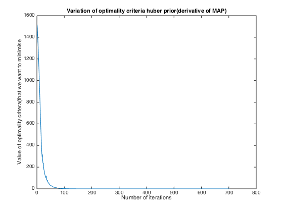
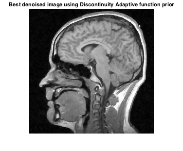
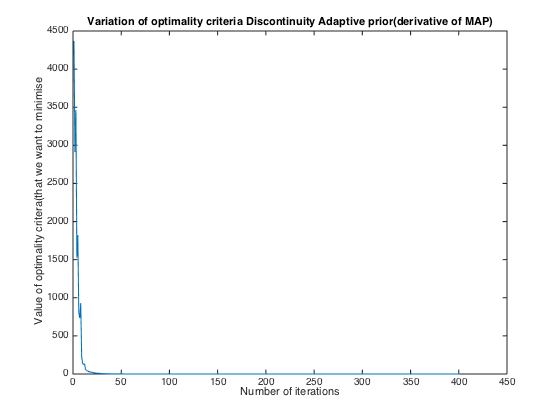

Contents
clear all load('assignmentImageDenoisingBrainNoisy.mat');
Standard Deviation of Noise
First we need to estimate the parameters of the gaussian noise. For that we select a segment of the top left most 50 pixels by 50 pixels.
image_noise_level = imageNoisy(1:50,1:50);
We can see that the above portion of the image is clearly noise and we can use it to get the noise characteristics.
imshow(image_noise_level); title('Noise portion of the image')
Warning: Displaying real part of complex input.
noise_mean = mean(mean(image_noise_level)) normalised_noise = abs(image_noise_level - noise_mean); noise_variance_matrix = normalised_noise.^2; noise_variance = sum(sum(noise_variance_matrix))/(numel(noise_variance_matrix)-1); standard_deviation = sqrt(noise_variance)
noise_mean =
0.0248 + 0.0001i
standard_deviation =
0.0847
fprintf('Hence standard deviation of noise is %f \n', real(standard_deviation));
Hence standard deviation of noise is 0.084671
Denoising a Brain Magnetic Resonance Image - Quadratic Prior
We want to denoise the image using Bayesian image-denoising algorithm that uses a noise model coupled with a MRF prior that uses a 4-neighbor neighborhood system
clear all load('assignmentImageDenoisingBrainNoisy.mat'); alpha = 0.5; tow = 0.1; x_old = imageNoisy; iteration_count = 1; alpha = 0.05:0.05:0.95; find_optimal_alpha_matrix = [inf, inf]; optim_fn_iteration_variation = [inf, inf]; for alpha = 0.3 tow = 0.1; x_old = imageNoisy; iteration_count = 1; while(tow>0.01) g_x_old = gradient_quadfunction(x_old, imageNoisy, alpha); x = x_old - tow*g_x_old; g_x_new = gradient_quadfunction(x, imageNoisy, alpha); if(sum(sum((abs(g_x_old)>abs(g_x_new)))) > sum(sum((abs(g_x_old)<abs(g_x_new))))) tow = 1.1*tow; x_old = x; else tow = 0.5*tow; x = x_old; end optim_fn_iteration_variation = [optim_fn_iteration_variation; [iteration_count, sum(sum(abs(g_x_new)))]]; iteration_count = iteration_count + 1; end fprintf('Number of iterations the gradient descent ran was %f \n', iteration_count); end
Number of iterations the gradient descent ran was 88.000000
We can verify from visual inspection that the optimal value of alpha is 0.3
figure();
quad_denoised = x;
imshow(abs(x))
title('Best denoised image using quadratic prior')
 figure(); plot(optim_fn_iteration_variation(2:end,1), optim_fn_iteration_variation(2:end,2)); title('Variation of optimality criteria quadratic prior(derivative of MAP)') xlabel('Number of iterations') ylabel('Value of optimality critera(that we want to minimise')
Denoising a Brain Magnetic Resonance Image - Huber function
We want to denoise the image using Bayesian image-denoising algorithm that uses a noise model coupled with a MRF prior that uses a 4-neighbor neighborhood system
load('assignmentImageDenoisingBrainNoisy.mat'); alpha = 0.5; tow = 0.1; gamma = 1; x_old = imageNoisy; iteration_count = 1; alpha = 0.05:0.05:0.95; find_optimal_alpha_matrix = [inf, inf, inf]; optim_fn_iteration_variation = [inf, inf]; for alpha = 0.9 for gamma = 0.01 tow = 0.1; x_old = imageNoisy; iteration_count = 1; while(tow>0.01) g_x_old = gradient_adaptive_huber(x_old, imageNoisy, alpha, gamma); x = x_old - tow*g_x_old; g_x_new = gradient_adaptive_huber(x, imageNoisy, alpha, gamma); if(sum(sum(abs(g_x_old))) > (sum(sum(abs(g_x_new))))) tow = 1.1*tow; x_old = x; else tow = 0.5*tow; x = x_old; end optim_fn_iteration_variation = [optim_fn_iteration_variation; [iteration_count, sum(sum(abs(g_x_new)))]]; iteration_count = iteration_count + 1; end fprintf('Number of iterations the gradient descent ran was %f \n', iteration_count); end % s = 'Optimal Huber function Prior Image for ALPHA = '; % s = strcat(s,num2str(alpha),'and gamma = '); % s = strcat(s, num2str(gamma)); % figure(); % imshow(abs(x)) % title(s); % pause(); end
Number of iterations the gradient descent ran was 704.000000
We can verify from visual inspection that the optimal value of alpha is 0.9 and gamma is 0.01
figure();
quad_denoised = x;
imshow(abs(x))
title('Best denoised image using huber prior')
 figure(); plot(optim_fn_iteration_variation(2:end,1), optim_fn_iteration_variation(2:end,2)); title('Variation of optimality criteria huber prior(derivative of MAP)') xlabel('Number of iterations') ylabel('Value of optimality critera(that we want to minimise')
Denoising a Brain Magnetic Resonance Image - Discontinuity Adaptive function
We want to denoise the image using Bayesian image-denoising algorithm that uses a noise model coupled with a MRF prior that uses a 4-neighbor neighborhood system
clear all load('assignmentImageDenoisingBrainNoisy.mat'); alpha = 0.5; tow = 0.1; gamma = 1; x_old = imageNoisy; iteration_count = 1; alpha = 0.05:0.05:0.95; find_optimal_alpha_matrix = [inf, inf, inf]; optim_fn_iteration_variation = [inf, inf]; for alpha = 0.9 for gamma = 0.015 tow = 5; x_old = imageNoisy; iteration_count = 1; RRMSE_new = 10; RRMSE_old = 5; while(tow>0.01 && abs(RRMSE_new - RRMSE_old)>(0.0001*RRMSE_new)) g_x_old = gradient_adaptive_disc_adaptive_function(x_old, imageNoisy, alpha, gamma); x = x_old - tow*g_x_old; g_x_new = gradient_adaptive_disc_adaptive_function(x, imageNoisy, alpha, gamma); if(sum(sum(abs(g_x_old))) > (sum(sum(abs(g_x_new))))) tow = 1.1*tow; x_old = x; else tow = 0.5*tow; x_old = x; end optim_fn_iteration_variation = [optim_fn_iteration_variation; [iteration_count, sum(sum(abs(g_x_new)))]]; iteration_count = iteration_count + 1; end end end
We can verify from visual inspection that the optimal value of alpha is 0.9 and gamma is 0.015
figure();
quad_denoised = x;
imshow(abs(x))
title('Best denoised image using Discontinuity Adaptive function prior')
 figure(); plot(optim_fn_iteration_variation(2:end,1), optim_fn_iteration_variation(2:end,2)); title('Variation of optimality criteria Discontinuity Adaptive prior(derivative of MAP)') xlabel('Number of iterations') ylabel('Value of optimality critera(that we want to minimise')
Note that the question of choosing optimal parameters is highly subjective, since someone might hate any visible smoothing of the image or someone else could hate any noise being present. Also the image size is really small to be able to best decide the optimal configuration. The above parameters was the best we found from our personal judgement.